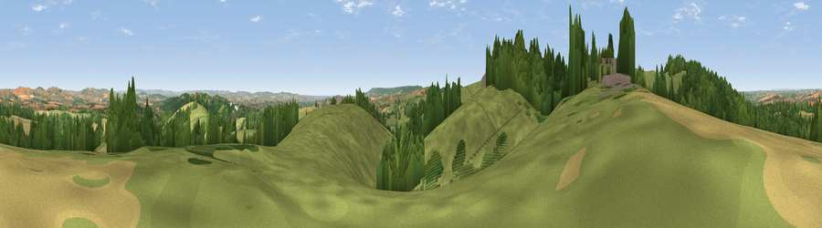

Viewpoint near Whitestone
#10391 in England · top 15% of its area beats it · near WhitestoneWhere it is
The exact computed spot (SX 88225 95025). Click the marker for map links.
The view, rendered

A 360° render of this exact spot computed from the terrain model, tree cover and land cover — summer colours, afternoon light, calibrated against photographs of famous viewpoints. Real trees, hedges and buildings will differ in detail.
The panorama
Grey silhouette: terrain skyline in each direction (720 bearings, Earth curvature and refraction included). Dashed green: skyline with trees (+15 m) and buildings (+8 m) as obstacles. Blue strip: how far the ground is visible on each bearing.
Where the view opens
Wedge length = distance to the farthest visible ground on that bearing (vegetation-aware). Rings at 10, 25 and 50 km.
What fills the view
58% grassland · 26% woodland · 15% cropland · 1% built-up
Angular shares of the visible panorama (visual magnitude), not map area. Landscape diversity 0.44 (0–1 Shannon).
Key numbers
More beautiful places nearby
The staircase of upgrades: each row has a higher view potential than everything closer. Driving times are estimates from straight-line distance, calibrated against real road routing — check an actual route before setting out.
| Place | Direction | Drive | Score |
|---|---|---|---|
| Viewpoint near Whitestone | W · 1 km | ~2 min | 73.9 |
| Viewpoint near Whitestone | WSW · 2 km | ~5 min | 79.8 |
| Viewpoint near Kenn | SSE · 12 km | ~22 min | 80.0 |
| Viewpoint near Kenton | SSE · 14 km | ~26 min | 80.7 |
| Viewpoint near Kenton | SSE · 15 km | ~27 min | 82.9 |
| Viewpoint near Holcombe | SSE · 21 km | ~35 min | 83.3 |
| High Peak | ESE · 24 km | ~39 min | 85.3 |
| Viewpoint near Luxborough | NNE · 46 km | ~67 min | 85.5 |
50.74404, -3.58558 · source: screening · position refined by local search. Computed location — check access rights before visiting.